library(readr)
library(tidyverse)
library(dplyr)
library(ggformula)
library(janitor)
library(naniar)
library(visdat)Fish Market
Multiple Linear Regression
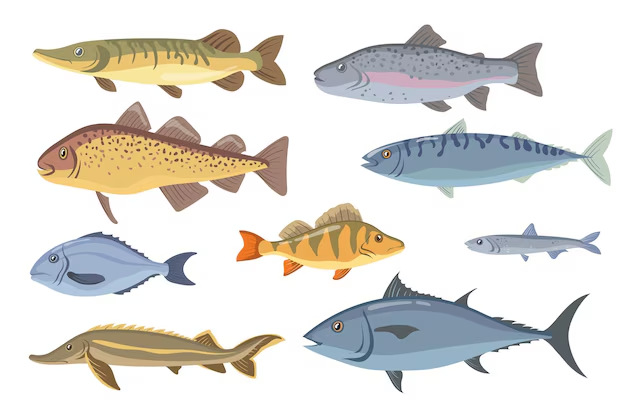
Estimate the weight of a fish based on its species and the physical measurements
Objective: The fish market dataset is a collection of data related to various species of fish and their characteristics. This dataset is designed for polynomial regression analysis and contains several columns with specific information. # #
- Setting up R Packages
- Reading Data
fish <- readr::read_csv("../../data/Fish.csv", show_col_types = FALSE)- Examining and Cleaning Data
dim(fish)[1] 159 7str(fish)spc_tbl_ [159 × 7] (S3: spec_tbl_df/tbl_df/tbl/data.frame)
$ Species: chr [1:159] "Bream" "Bream" "Bream" "Bream" ...
$ Weight : num [1:159] 242 290 340 363 430 450 500 390 450 500 ...
$ Length1: num [1:159] 23.2 24 23.9 26.3 26.5 26.8 26.8 27.6 27.6 28.5 ...
$ Length2: num [1:159] 25.4 26.3 26.5 29 29 29.7 29.7 30 30 30.7 ...
$ Length3: num [1:159] 30 31.2 31.1 33.5 34 34.7 34.5 35 35.1 36.2 ...
$ Height : num [1:159] 11.5 12.5 12.4 12.7 12.4 ...
$ Width : num [1:159] 4.02 4.31 4.7 4.46 5.13 ...
- attr(*, "spec")=
.. cols(
.. Species = col_character(),
.. Weight = col_double(),
.. Length1 = col_double(),
.. Length2 = col_double(),
.. Length3 = col_double(),
.. Height = col_double(),
.. Width = col_double()
.. )
- attr(*, "problems")=<externalptr> head(fish)# A tibble: 6 × 7
Species Weight Length1 Length2 Length3 Height Width
<chr> <dbl> <dbl> <dbl> <dbl> <dbl> <dbl>
1 Bream 242 23.2 25.4 30 11.5 4.02
2 Bream 290 24 26.3 31.2 12.5 4.31
3 Bream 340 23.9 26.5 31.1 12.4 4.70
4 Bream 363 26.3 29 33.5 12.7 4.46
5 Bream 430 26.5 29 34 12.4 5.13
6 Bream 450 26.8 29.7 34.7 13.6 4.93tail(fish)# A tibble: 6 × 7
Species Weight Length1 Length2 Length3 Height Width
<chr> <dbl> <dbl> <dbl> <dbl> <dbl> <dbl>
1 Smelt 9.8 11.4 12 13.2 2.20 1.15
2 Smelt 12.2 11.5 12.2 13.4 2.09 1.39
3 Smelt 13.4 11.7 12.4 13.5 2.43 1.27
4 Smelt 12.2 12.1 13 13.8 2.28 1.26
5 Smelt 19.7 13.2 14.3 15.2 2.87 2.07
6 Smelt 19.9 13.8 15 16.2 2.93 1.88names(fish)[1] "Species" "Weight" "Length1" "Length2" "Length3" "Height" "Width" visdat::vis_dat(fish, sort_type = TRUE)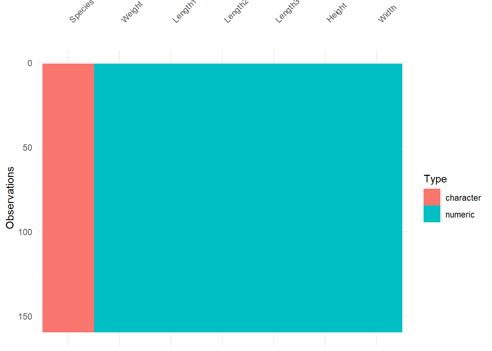
fish_modified <- fish %>% tidyr::drop_na()
visdat::vis_dat(fish_modified, sort_type = TRUE)
fish_modified <- fish %>%
dplyr::mutate(across(where(is.character), as.factor)) %>%
relocate(where(is.factor))
glimpse(fish_modified)Rows: 159
Columns: 7
$ Species <fct> Bream, Bream, Bream, Bream, Bream, Bream, Bream, Bream, Bream,…
$ Weight <dbl> 242, 290, 340, 363, 430, 450, 500, 390, 450, 500, 475, 500, 50…
$ Length1 <dbl> 23.2, 24.0, 23.9, 26.3, 26.5, 26.8, 26.8, 27.6, 27.6, 28.5, 28…
$ Length2 <dbl> 25.4, 26.3, 26.5, 29.0, 29.0, 29.7, 29.7, 30.0, 30.0, 30.7, 31…
$ Length3 <dbl> 30.0, 31.2, 31.1, 33.5, 34.0, 34.7, 34.5, 35.0, 35.1, 36.2, 36…
$ Height <dbl> 11.5200, 12.4800, 12.3778, 12.7300, 12.4440, 13.6024, 14.1795,…
$ Width <dbl> 4.0200, 4.3056, 4.6961, 4.4555, 5.1340, 4.9274, 5.2785, 4.6900…fish_modified %>%
DT::datatable(
style = "default",
caption = htmltools::tags$caption(
style = "caption-side: top; text-align: left; color: black; font-size: 100%;", "Fish Market Dataset (Clean)"
),
options = list(pageLength = 10, autoWidth = TRUE)
) %>%
DT::formatStyle(
columns = names(fish_modified),
fontFamily = "Arial",
fontSize = "12px",
)- Data Dictionary
Quantitative Data
- Weight (dbl): The weight of the fish (in grams).
- Length1 (dbl): The first measurement of the fish’s length (in cm).
- Length2 (dbl): The second measurement of the fish’s length (in cm).
- Length3 (dbl): The third measurement of the fish’s length (in cm).
- Height (dbl): The height of the fish (in cm).
- Width (dbl): The width of the fish (in cm).
Qualitative Data
- Species (fct): The species name of the fish (e.g., Perch, Bream, Roach, Pike, Smelt, Parkki, or Whitefish).
summary(fish) Species Weight Length1 Length2
Length:159 Min. : 0.0 Min. : 7.50 Min. : 8.40
Class :character 1st Qu.: 120.0 1st Qu.:19.05 1st Qu.:21.00
Mode :character Median : 273.0 Median :25.20 Median :27.30
Mean : 398.3 Mean :26.25 Mean :28.42
3rd Qu.: 650.0 3rd Qu.:32.70 3rd Qu.:35.50
Max. :1650.0 Max. :59.00 Max. :63.40
Length3 Height Width
Min. : 8.80 Min. : 1.728 Min. :1.048
1st Qu.:23.15 1st Qu.: 5.945 1st Qu.:3.386
Median :29.40 Median : 7.786 Median :4.248
Mean :31.23 Mean : 8.971 Mean :4.417
3rd Qu.:39.65 3rd Qu.:12.366 3rd Qu.:5.585
Max. :68.00 Max. :18.957 Max. :8.142 - Graphs
fish_modified %>%
gf_histogram(~ Weight,
fill = "cyan4",
bins = 20) %>%
gf_labs(title = "Weight",
x = "Weight (grams)",
y = "Number of Fish")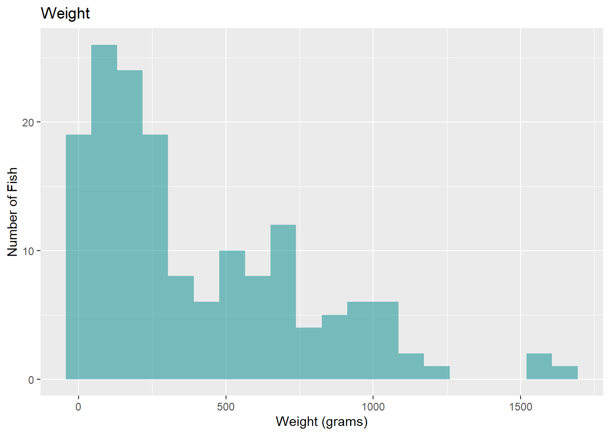
fish_avg_length <- fish_modified %>%
mutate(Average_Length = rowMeans(select(., Length1, Length2, Length3)))
fish_avg_length %>%
gf_histogram(~ Average_Length,
fill = "steelblue",
bins = 20) %>%
gf_labs(title = "Average Fish Length",
x = "Average Length (cm)",
y = "Number of Fish")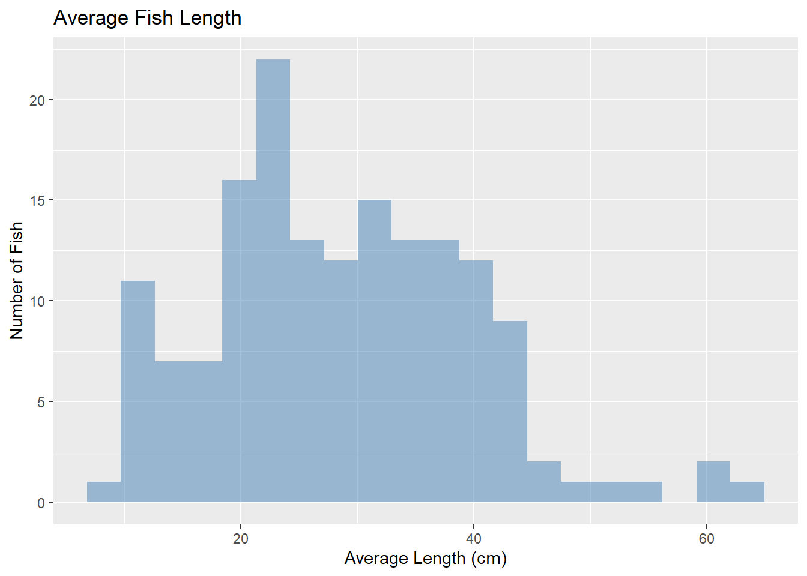
fish_modified %>%
gf_histogram(~ Height,
fill = "pink",
bins = 20) %>%
gf_labs(title = "Height",
x = "Height (cm)",
y = "Number of Fish")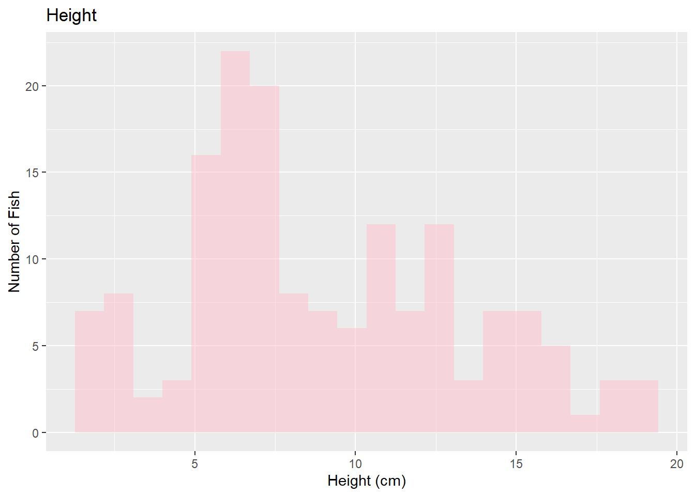
fish_modified %>%
gf_histogram(~ Width,
fill = "palevioletred",
bins = 20) %>%
gf_labs(title = "Width",
x = "Width (cm)",
y = "Number of Fish")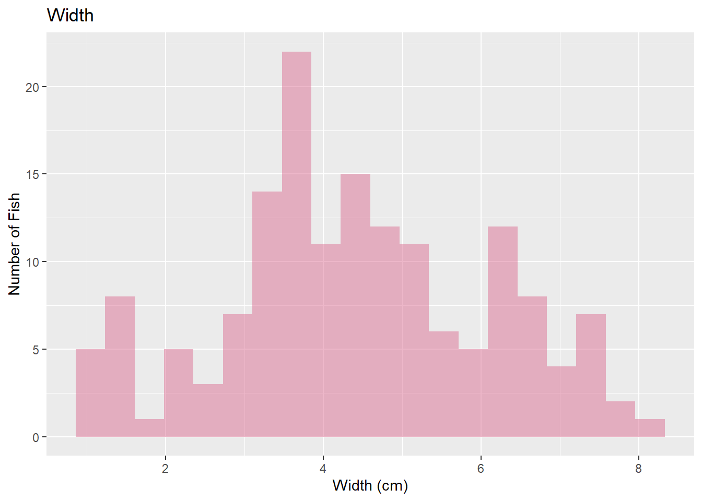
fish_avg_length %>%
gf_point(Average_Length ~ Weight, data = fish_avg_length, color = 'lightgreen', size = 2) %>%
gf_smooth(color = 'black') %>%
gf_labs(title = "Average Length vs Weight",
x = "Weight (grams)",
y = "Average Length (cm)")`geom_smooth()` using method = 'loess'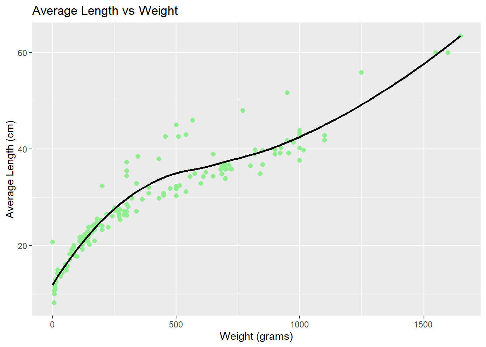
fish_avg_length %>%
gf_point(Width ~ Weight, data = fish_avg_length, color = 'navy', size = 2) %>%
gf_smooth(color = 'black') %>%
gf_labs(title = "Width vs Weight",
x = "Width (cm)",
y = "Average Length (cm)")`geom_smooth()` using method = 'loess'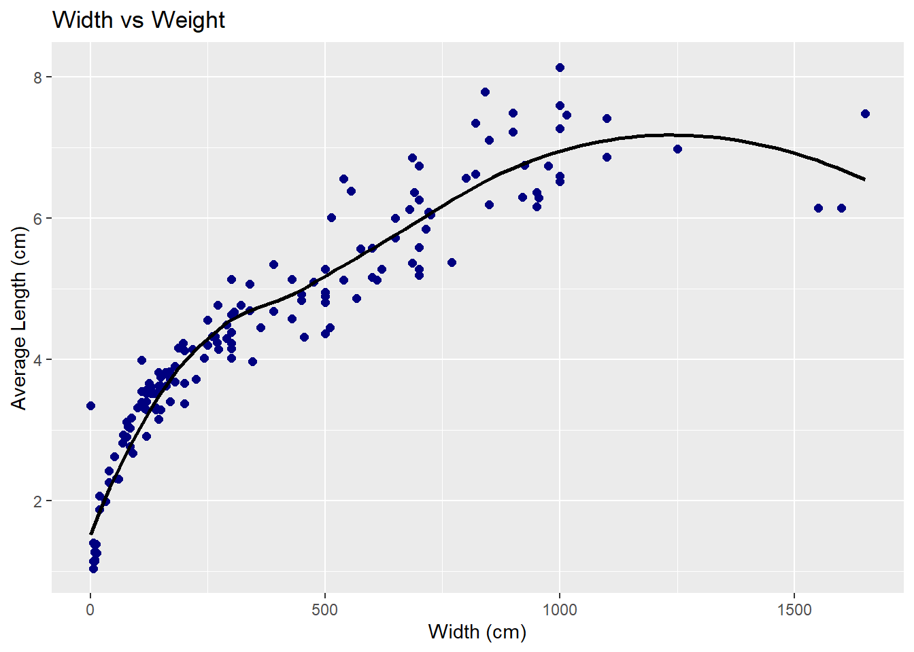
fish_avg_length %>%
gf_point(Height ~ Weight, data = fish_avg_length, color = 'darkgreen', size = 2) %>%
gf_smooth(color = 'black') %>%
gf_labs(title = "Height vs Weight",
x = "Width (cm)",
y = "Height (cm)")`geom_smooth()` using method = 'loess'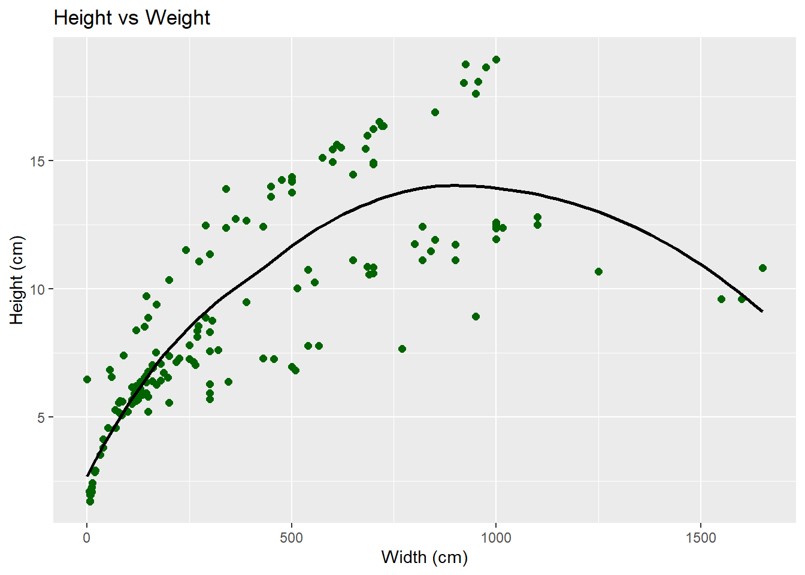
fish_lm <- lm(Weight ~ Average_Length +
Height +
Width,
data = fish_avg_length)
summary(fish_lm)
Call:
lm(formula = Weight ~ Average_Length + Height + Width, data = fish_avg_length)
Residuals:
Min 1Q Median 3Q Max
-249.43 -74.34 -31.97 77.72 444.42
Coefficients:
Estimate Std. Error t value Pr(>|t|)
(Intercept) -517.976 28.865 -17.945 < 2e-16 ***
Average_Length 21.161 1.917 11.036 < 2e-16 ***
Height 9.701 3.826 2.535 0.01223 *
Width 50.579 15.092 3.351 0.00101 **
---
Signif. codes: 0 '***' 0.001 '**' 0.01 '*' 0.05 '.' 0.1 ' ' 1
Residual standard error: 124.8 on 155 degrees of freedom
Multiple R-squared: 0.8808, Adjusted R-squared: 0.8785
F-statistic: 381.8 on 3 and 155 DF, p-value: < 2.2e-16# This is where I realised this was multiple linear regression
# fish_avg_length %>%
# gf_point(Weight ~ Average_Length +
# Height +
# Width, color = 'hotpink') %>%
# gf_lm(color = "black")%>%
# gf_labs(title = "Weight vs (Average Length, Height, Width)",
# x = "Model",
# y = "Weight (grams)")- Predicting Model
test = data.frame(Average_Length = 30,
Height = 15,
Width = 5.5)
predict(fish_lm, newdata = test) 1
540.5573 - Summary of Inferences
This dataset contains three recordings of the length of each fish. I used the average of these lengths for the graphs. I checked the correlation of [average length vs weight], [width vs weight], and [height vs weight] and I found that there was no linear relation between any of them. However, I created a linear regression model of [weight vs (average length, height and width)] and the summary shows that it is very significant. The adjusted R^2 value is closer to 1, thus proves that this linear regression model is successful. However, I was not able to plot the graph. On learning what the error was, I came to know that this was a multiple linear regression model and the syntax for the graph was incorrect.
- Prediction using train and test data
rows <- nrow(fish_avg_length)
rows[1] 1590.75 * rows[1] 119.25train_rows <- sample(1:nrow(fish_avg_length), 120)train_data = fish_avg_length[train_rows, ]test_data = fish_avg_length[-train_rows, ]table(test_data$Species)
Bream Parkki Perch Pike Roach Smelt Whitefish
10 3 13 2 8 3 0 table(fish_avg_length$Species)
Bream Parkki Perch Pike Roach Smelt Whitefish
35 11 56 17 20 14 6 prop.table(table(fish_avg_length$Species))
Bream Parkki Perch Pike Roach Smelt Whitefish
0.22012579 0.06918239 0.35220126 0.10691824 0.12578616 0.08805031 0.03773585 - average length, height, width -> weight
avgl_h_w_lm <- lm(Weight ~ Average_Length + Height + Width,
data = train_data)
summary(avgl_h_w_lm)
Call:
lm(formula = Weight ~ Average_Length + Height + Width, data = train_data)
Residuals:
Min 1Q Median 3Q Max
-161.41 -75.48 -38.99 53.51 457.61
Coefficients:
Estimate Std. Error t value Pr(>|t|)
(Intercept) -508.546 32.282 -15.753 < 2e-16 ***
Average_Length 15.665 2.065 7.586 8.99e-12 ***
Height 12.249 4.024 3.044 0.00289 **
Width 76.774 15.636 4.910 3.01e-06 ***
---
Signif. codes: 0 '***' 0.001 '**' 0.01 '*' 0.05 '.' 0.1 ' ' 1
Residual standard error: 114.2 on 116 degrees of freedom
Multiple R-squared: 0.887, Adjusted R-squared: 0.8841
F-statistic: 303.5 on 3 and 116 DF, p-value: < 2.2e-16predicted_values1 <- predict(avgl_h_w_lm, newdata = test_data)plot(predicted_values1, test_data$Weight,
xlab = "Predicted Weight (gm)",
ylab = "Actual Weight (gm)",
main = "Fish Weight: Predicted vs. Actual")
abline(a = 0, b = 1, col = "palevioletred", lwd = 2)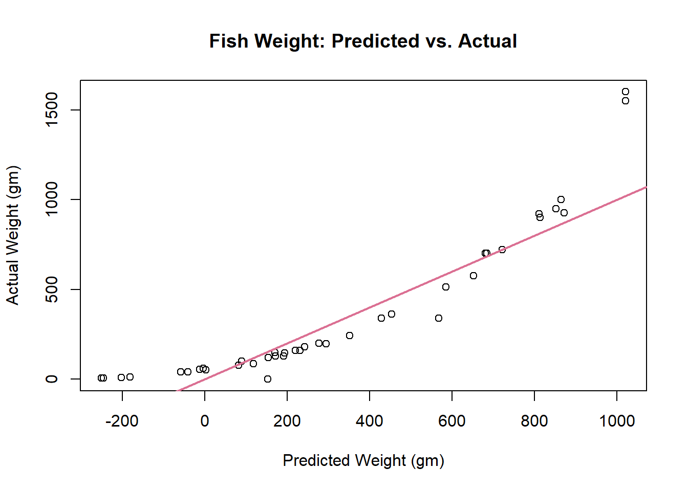
- average length -> weight
avgl_lm <- lm(Weight ~ Average_Length,
data = train_data)
summary(avgl_lm)
Call:
lm(formula = Weight ~ Average_Length, data = train_data)
Residuals:
Min 1Q Median 3Q Max
-373.02 -67.17 -17.58 92.83 343.10
Coefficients:
Estimate Std. Error t value Pr(>|t|)
(Intercept) -459.209 40.775 -11.26 <2e-16 ***
Average_Length 29.605 1.316 22.49 <2e-16 ***
---
Signif. codes: 0 '***' 0.001 '**' 0.01 '*' 0.05 '.' 0.1 ' ' 1
Residual standard error: 146.5 on 118 degrees of freedom
Multiple R-squared: 0.8109, Adjusted R-squared: 0.8093
F-statistic: 506 on 1 and 118 DF, p-value: < 2.2e-16predicted_values2 <- predict(avgl_lm, newdata = test_data)plot(predicted_values2, test_data$Weight,
xlab = "Predicted Weight (gm)",
ylab = "Actual Weight (gm)",
main = "Fish Weight: Predicted vs. Actual")
abline(a = 0, b = 1, col = "violet", lwd = 2)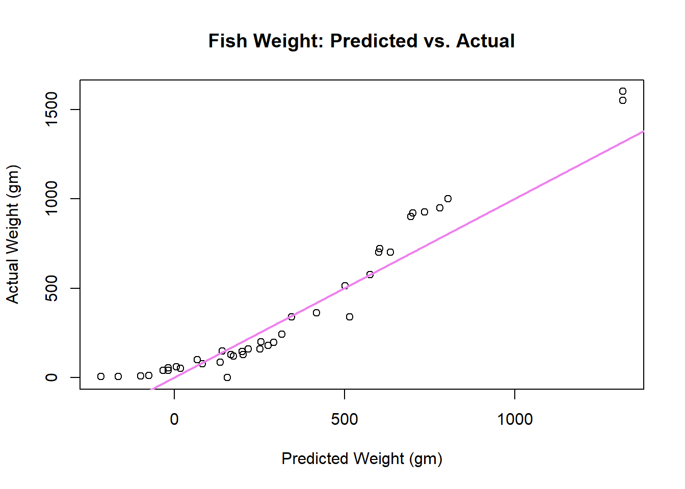
- width -> weight
w_lm <- lm(Weight ~ Width,
data = train_data)
summary(w_lm)
Call:
lm(formula = Weight ~ Width, data = train_data)
Residuals:
Min 1Q Median 3Q Max
-244.89 -96.36 -33.92 74.54 695.95
Coefficients:
Estimate Std. Error t value Pr(>|t|)
(Intercept) -424.273 37.336 -11.36 <2e-16 ***
Width 184.267 7.771 23.71 <2e-16 ***
---
Signif. codes: 0 '***' 0.001 '**' 0.01 '*' 0.05 '.' 0.1 ' ' 1
Residual standard error: 140.3 on 118 degrees of freedom
Multiple R-squared: 0.8265, Adjusted R-squared: 0.8251
F-statistic: 562.2 on 1 and 118 DF, p-value: < 2.2e-16predicted_values3 <- predict(w_lm, newdata = test_data)plot(predicted_values3, test_data$Weight,
xlab = "Predicted Weight (gm)",
ylab = "Actual Weight (gm)",
main = "Fish Weight: Predicted vs. Actual")
abline(a = 0, b = 1, col = "navy", lwd = 2)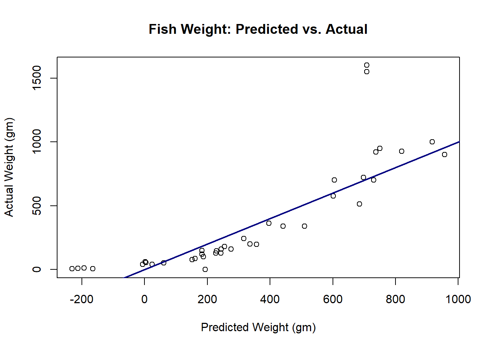
- height -> weight
h_lm <- lm(Weight ~ Height,
data = train_data)
summary(h_lm)
Call:
lm(formula = Weight ~ Height, data = train_data)
Residuals:
Min 1Q Median 3Q Max
-324.02 -120.09 -65.81 63.46 1136.54
Coefficients:
Estimate Std. Error t value Pr(>|t|)
(Intercept) -138.397 49.085 -2.82 0.00564 **
Height 60.290 4.931 12.23 < 2e-16 ***
---
Signif. codes: 0 '***' 0.001 '**' 0.01 '*' 0.05 '.' 0.1 ' ' 1
Residual standard error: 223.7 on 118 degrees of freedom
Multiple R-squared: 0.5588, Adjusted R-squared: 0.5551
F-statistic: 149.5 on 1 and 118 DF, p-value: < 2.2e-16predicted_values4 <- predict(h_lm, newdata = test_data)plot(predicted_values4, test_data$Weight,
xlab = "Predicted Weight (gm)",
ylab = "Actual Weight (gm)",
main = "Fish Weight: Predicted vs. Actual")
abline(a = 0, b = 1, col = "pink", lwd = 2)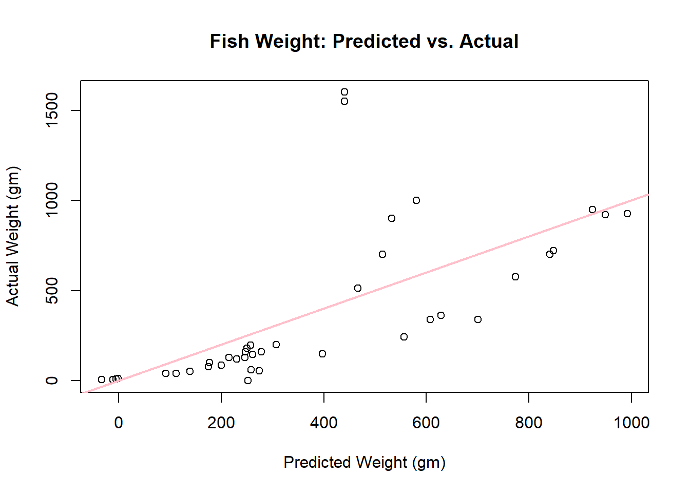
Finding RMSE for each linear model
sqrt(mean((predicted_values1-test_data$Weight)^2))[1] 164.7363sqrt(mean((predicted_values2-test_data$Weight)^2))[1] 122.3503sqrt(mean((predicted_values3-test_data$Weight)^2))[1] 228.2578sqrt(mean((predicted_values4-test_data$Weight)^2))[1] 308.9145Therefore, we can conclude that the second model [ average length -> weight ] is the most successful linear model because it has the lowest RMSE -> 139.3819